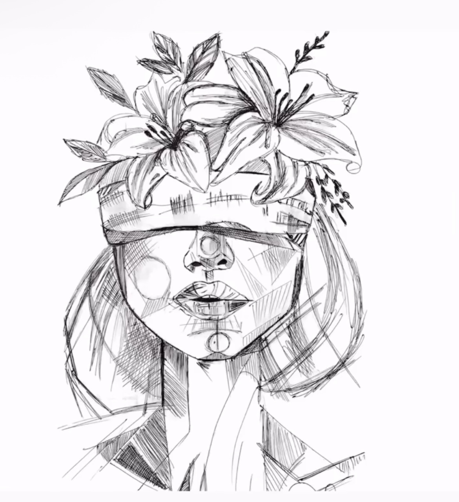
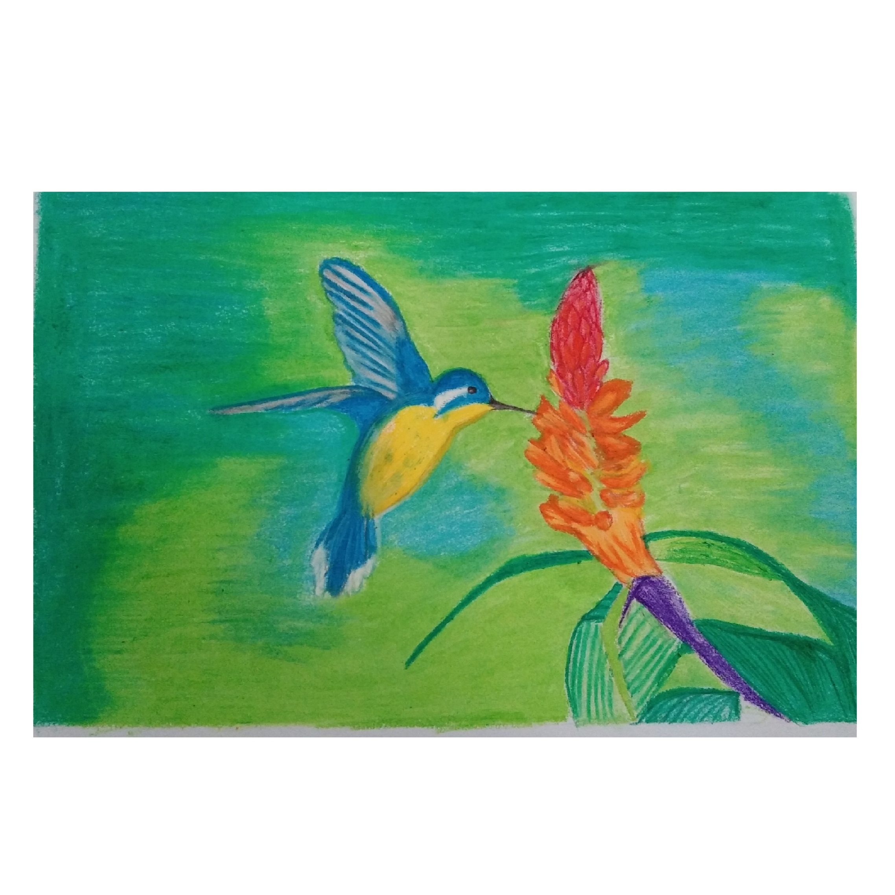
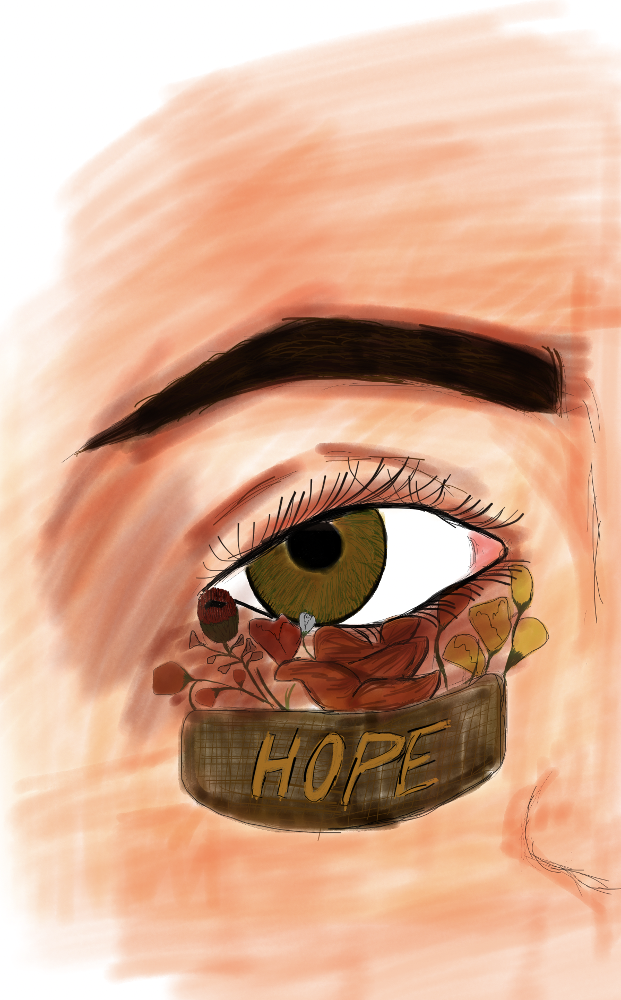

Every drawing begins with a single line.
Art has always been more than just a hobby for me—it is a way of observing the world. Every drawing begins with a blank sheet of paper, yet within those empty spaces lies the possibility of creating something meaningful. Each sketch teaches patience, precision, and the beauty of paying attention to details that often go unnoticed.
Over the years, drawing has become one of the most rewarding creative experiences in my life. Whether it's a realistic portrait, a landscape, or a simple pencil sketch, every piece reflects hours of observation, practice, and dedication. Every line has a purpose, and every shadow tells part of the story.
Inspiration comes from everyday life. Sometimes it is a photograph, a peaceful sunset, or simply an interesting expression on someone's face. Rather than copying what I see, I enjoy understanding the shapes, proportions, and emotions behind every subject.
Drawing reminds me that progress is never instant. Every completed artwork is the result of patience, continuous learning, and the willingness to improve. Those same qualities influence my professional work as well, encouraging creativity, focus, and attention to detail in every project I take on.

Abstract Art

Nature Sketch

Digital Art
Every artwork represents another step in my creative journey. While styles and techniques continue to evolve, the passion for creating meaningful art remains unchanged. I look forward to sharing more sketches and creative projects here as my portfolio continues to grow.